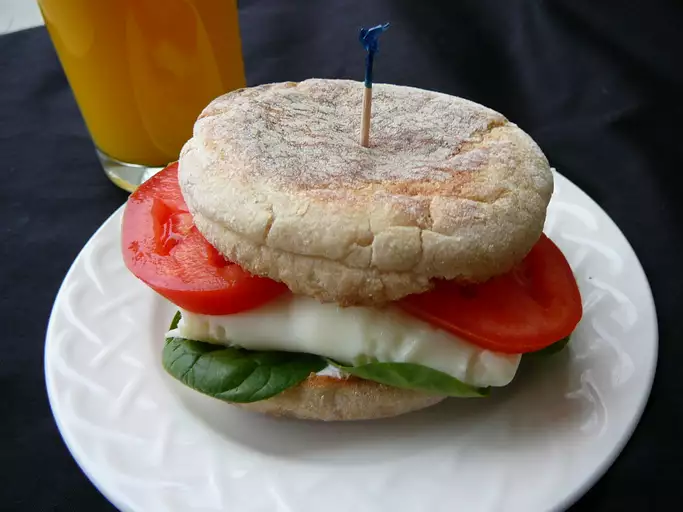

Healthy Breakfast Sandwich

A quick and easy breakfast with whole grain muffins, egg whites, spinach, and fresh tomato.
Ingredients
- 3/4 cup liquid egg whites
- 2 whole-wheat English muffins, split
- 1/2 cup baby spinach leaves
- 2 slices fresh tomato
Directions
- Cook egg whites in a non-stick skillet over medium heat until opaque, about 4 minutes.
- Toast English muffins. Divide cooked egg whites between 2 muffin bottoms. Top with spinach,
1 tomato slice, and muffin tops.